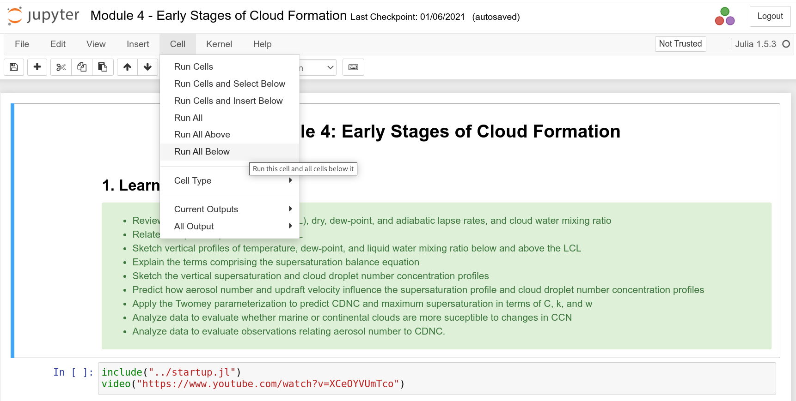

Atmospheric Physics Notebooks
The notebooks contain instructional material, interactive web-apps, and exercises for students to engage with the material using an inquiry-based approach. Details about this project are given in Petters, 2021.
Request Resource
To use these notebooks follow this link: http://notebooks.meas.ncsu.edu/apn
It is possible to open multiple Jupyter notebooks with a single provisioned resource. Please do not request a multiple instances for the purpose of opening multiple notebooks.
Provisioning of an instance requires a few seconds. The total number of concurrently available instances is 50. You may directly supply this link to students in your course for use during and after lectures. Note that students sometimes accidentally close browser tab. If they do so, they may use the link again to request a new set of notebooks. However, the original resource only reenters the pool after 75-95 min of the original request.
How to Use
Use the Jupyter file manager to navigate to a notebook. For example, load the file Module 4 - Early Stages of Cloud Formation.ipynb. Make sure to wait until the kernel is initialized. The select "Run All Below".

The cursor will jump to the end of the notebook. The entire notebook will be executed, which will take a few seconds. Then navigate back to the beginning of the notebook or an app of your choice. Below is an example of parcel model app. Use the sliders to change inputs. The graph should update near instantaneously.

Source Repository
This project is hosted on GitHub. Detailed documentation about the project is provided here.
Docker/Podman Access
Users with access to either docker or podman can bypass the server and run the containers on their own hardware using the following command
docker run -it -p 8888:8888 mdpetters/apn:latestor
podman run -it -p 8888:8888 mdpetters/apn:latest